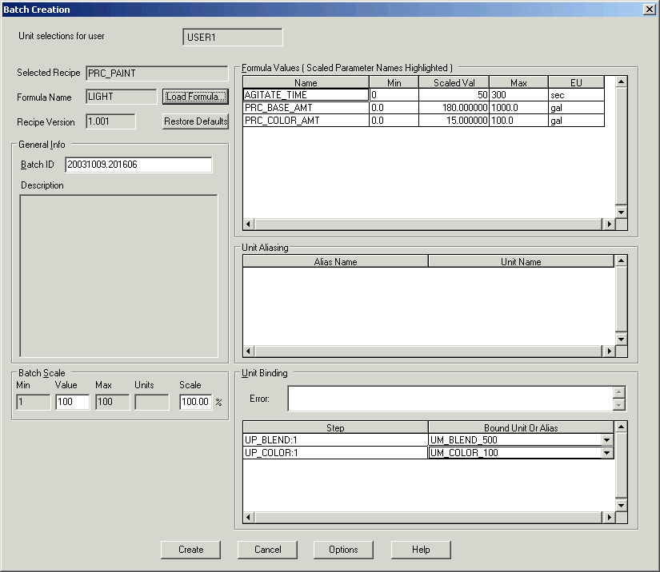

Test recipe formulas
Now that you have created three recipe formulas, you can go to Batch Operator Interface to see how they can be used in a batch.
Now that you have created three recipe formulas, you can go to Batch Operator Interface to see how they can be used in a batch.

The formula values for the LIGHT formula are listed.